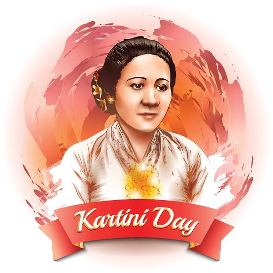

R.A.Kartini
"Revolutionary Indonesian Feminist: The Inspiring Legacy of Ra Kartini"

Raden Adjeng Kartini (21 April 1879 - 17 September 1904), also known as Raden Ayu Kartini, was a prominent Indonesian activist who advocated for women's rights and female education.
Here's a time line of R.A Kartini life:
- 1879 - Raden Ajeng Kartini is born in Jepara, a small town on the north coast of Java, in the Dutch East Indies
- 1893 - Kartini's father, Sosroningrat, is appointed regent of Jepara, which gives Kartini access to better education and opportunities than most Javanese girls of her time
- 1899 - Kartini begins corresponding with a Dutch woman named Rosa Abendanon, who becomes her pen pal and confidante. Through their letters, Kartini becomes more aware of the status of women in Western society and begins to develop her ideas about women's rights and education
- 1903 - Kartini marries Joyodiningrat, a regent from the neighboring town of Rembang, in a traditional Javanese wedding ceremony. However, she continues to advocate for women's education and rights, and her husband supports her work
- 1904 - Kartini gives birth to her first child, a son named Soesalit
- 1904 - Kartini dies of complications from childbirth at the age of 25. She leaves behind a daughter, named Roekmini, who is raised by her husband and his second wife. Her death is mourned by many in Java and the Netherlands, and her legacy as a pioneering advocate for women's rights lives on to this day
- 1911 - Kartini's letters to Abendanon are published in a book titled "Door Duisternis tot Licht" ("From Darkness into Light") in the Netherlands. The book becomes a best-seller and helps to spread Kartini's ideas about women's education and rights throughout the Dutch East Indies
- 1964 - Kartini is declared a national heroine of Indonesia, and her birthday (April 21) is declared a national holiday known as Kartini Day. Today, she is celebrated as a symbol of women's empowerment and a pioneer of Indonesian feminism
"Freedom is not something that can be given to you. Freedom is something that you must take for yourself."
-- R.A. Kartini
If you have time, you should read more about this incredible human being on his Wikipedia entry.